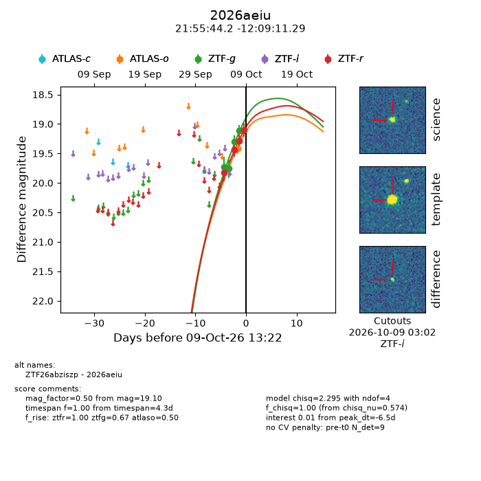
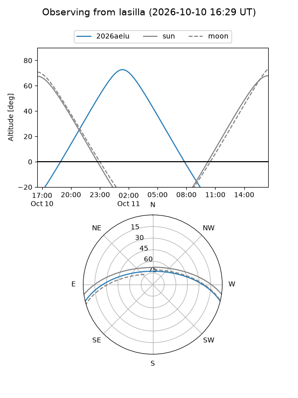
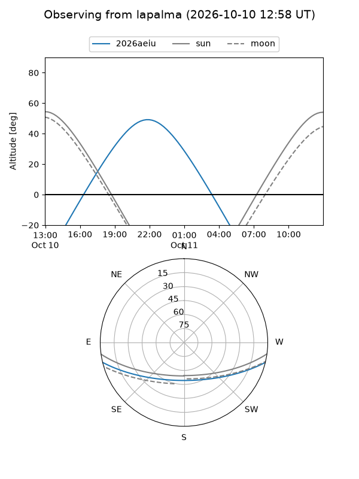
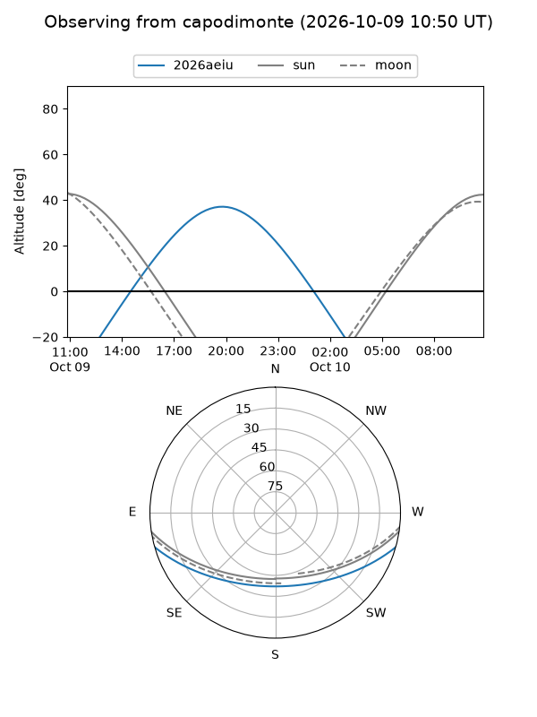
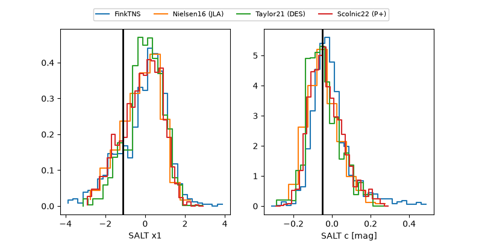

2026aeiu
Target 2026aeiu at 2026-10-09 13:25
Aliases and brokers:
FINK-ZTF: ztf.fink-portal.org/ZTF26abziszp
Lasair-ZTF: lasair-ztf.lsst.ac.uk/objects/ZTF26abziszp
ALeRCE-ZTF: alerce.online/object/ZTF26abziszp
YSE-PZ: ziggy.ucolick.org/yse/transient_detail/2026aeiu
TNS name: wis-tns.org/object/2026aeiu
Direct TNS query: direct search
alt names
ZTF26abziszp (ztf,fink_ztf)
2026aeiu (tns,yse)
Coordinates:
equatorial (ra, dec) = 328.9343,-12.15314
equatorial (HMS+DMS) = 21:55:44.23,-12:09:11.29
galactic (l, b) = (44.0842,-46.27292)
Flags:
peak dt: -6.5
Photometry:
last atlaso=19.42, ztfg=19.11, ztfr=19.10
1 atlaso, 4 ztfg, 4 ztfr detections
Lightcurve

Visibility



Additional plots
